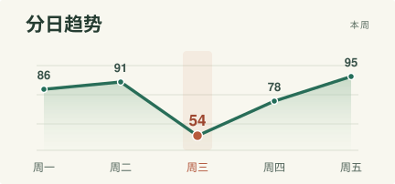

Mac · Chrome 网页版 ChatGPT
刚截的图，点一下就进ChatGPT。
点屏幕边缘的缩略图，把刚截的图附加到 Chrome 中当前可编辑的 ChatGPT 草稿。
macOS 13+ · Apple silicon · Intel
周报工作台交互示意

ChatGPT当前草稿
点右侧的截图，试试附加。
点屏幕边缘的缩略图，把刚截的图附加到 Chrome 中当前可编辑的 ChatGPT 草稿。

点右侧的截图，试试附加。